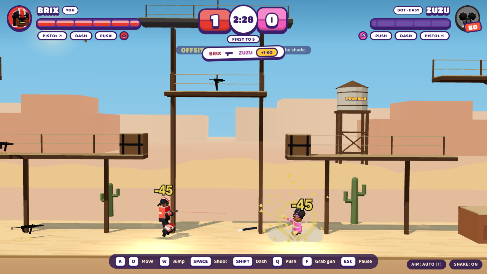

Flat cartoon bursts with an ink outline (they read on sky and on sand; the BEFORE is a pale grey hexagon). Frame 1 = full; second half of life = 65 % and the cream core drops out. The grey box is a 1.8 m fighter for scale.
Centred KO! stamp (tomato = the KO token), the body launched along the killing shot and spinning, the shooter's hit marker. The KO feed chip under the score goes (struck through here).
